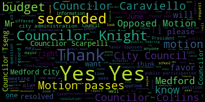
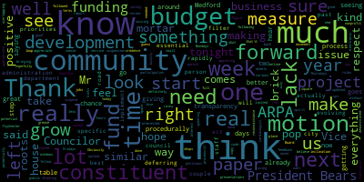
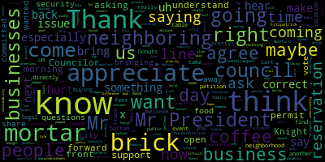
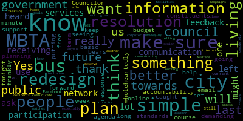

[Bears]: 25th regular meeting of the Medford City Council June 21 2022 is called to order Mr. Clerk, please call the roll.
[Hurtubise]: Council carry on. Council calls present Council night present Council Scarpelli Council saying present President Morales informer she's going to be absent.
[Bears]: Vice President Bears present six present one absent, please rise to salute the flag.
[Hurtubise]: with liberty and justice for all.
[Bears]: Thank you. And I just, before we start, want to inform the public, President Morell and her family have contracted COVID. That's why she's not able to be here tonight. We are sending her our best wishes and hope to have her back with us very soon. Councilor Collins.
[Collins]: Motion to suspend the rules to take petitions, presentations and similar papers, and then public participation.
[Bears]: Motion to suspend the rules to take petitions, presentations and similar papers followed by public participation by Councilor Collins, seconded by Councilor Scarpelli. All those in favor? All those opposed? Motion passes. 22-366, City of Medford, notice of a public hearing. Medford City Council hold a public hearing in the Howard F. Alden Chambers at Medford City Hall, 85 George B. Hassett Drive, Medford and via Zoom on Tuesday. June 21st, 2022, a link to be posted no later than Friday, June 17th, 2022, on a petition from the Ford on the Meadow. Barry Rafferty, 61 Locust Street, Medford, 02155, for a special permit to amend its hours of operations in accordance with Medford Zoning Ordinance, Chapter 94, 7.2.1, to operate extended hours of its business at 61 Locust Street, Medford, MA, site being located in a mixed-use zoning district as follows. 11 p.m., extended hours of operation requested, 11 p.m. to 1 a.m. Sundays through Saturdays. Petition and plan may be seen in the office of the City Clerk. Room 103, Medford City Hall, Medford, Massachusetts. Call 781-393-2425 for any aids and accommodations. This is by order of the City Council, Adam Herdeby, City Clerk. Advertise the Medford transcript June 2nd and June 9th. Mr. Efford, if you'd give us a short presentation and then we will open the hearings.
[Rafferty]: Good evening all. We simply want to extend our hours to 1 a.m. I'm not saying that we actually will open until 1 a.m. on seven nights a week. We will do so when the need arises. But, you know, there are times with, you know, the Celtics last week or the week before last, you know, it runs past 11 a.m. or 11 p.m. and we're in a situation where we have to close early and ask people to leave before the game's over. So we'd like to avoid that.
[Bears]: Thank you, Mr. Rafferty. As this is a public hearing, I'm opening the public hearing to people in favor of the petition. Could you give us your name and address? Barry Rafferty, 51 Crocker Road, Medford. Thank you. Anyone else in favor of the petition? Seeing none, this portion of the hearing is closed. Now open to anyone in opposition to the petition. Seeing none, this portion of the hearing is closed. Now open it to members of the council for questions. Councilor Knight.
[Knight]: Mr. President, first of all, I'd like to thank Mr. Rafferty for being here this evening. He's actually here at our behest and our request. Previously, he was here before us to get a common victuals license to open up his restaurant. And we had a little bit of discussion about what was gonna be in the menu and the like, and where it's an establishment that serves alcohol. He has received a alcohol permit from liquor licensing commission. That license goes to one and but I am city of Medford in order to get extended hours need to come before the council so Mister Rafferty and his wisdom is actually following the protocols and processes that are in place here in the community. I commend him for complying. I am someone who really likes to sell it to make it thrown out the middle of the game. So I certainly support this measure wholeheartedly from what I understand. It has been quite a buzz about the business around the community a lot of people are saying good things about it, and I wish you the best of luck, sir. It's also very nice to see someone who resides in the community to invest their hard-earned dollars in this community and open up a business here. So, me as one Councilor, and I'm sure my colleagues behind the rail, I'm more than happy and willing to help you out in any endeavor that you need moving forward to make sure that this is a smooth transition for you as you open this establishment. but I support a lot of Mr. President, I'd offer the motion to waive the waiting period.
[Bears]: Thank you, Councilor Knight. Councilor Scarpelli.
[Scarpelli]: Thank you, Mr. President. I appreciate Mr. Rafferty. I know I'll support the second Councilor Knight's motion to waive and move forward. I hope you'll be in front of the council asking for a special time permit for the World Cup in Dubai. So if we can open up at two in the morning, and close at 10 in the morning. I appreciate it.
[Rafferty]: So thank you.
[Scarpelli]: Thank you. If you can, thanks. We won't be watching Italy, but.
[Bears]: Thank you, Councilor Scarpelli. On the motion of Councilor Knight to waive the public comment period and approve, seconded by Councilor Scarpelli. Any further discussion? All those in favor? Opposed? Motion passes. Thank you. I'd like now to go just if we could. Yes, exactly. So I'd like to move to a public participation for folks who were, basically we had to move to our regular meeting on Zoom. So if there's anyone on public participation at this point who'd like to speak to the public schools budget, anyone who'd like to speak in public participation to the school's budget? Any hands online? I have one hand online. Paul Garrity, please give your name and address for the record.
[Paul Garrity]: Good evening. My name is Paul Garrity. I live at Cedar Road in Medford, Mass. Basically, it's a little bit broader. It includes the school budget as well as the city budgets. I wanted to speak specifically to the recommendations Councilor Bear brought forward at the June 14th meeting There was a couple of portions. One was the addressing the long term budget needs. I am in full agreement with that. We really need to have a systematic process to capture, analyze, plan and manage the delivering in the cost of all city services and school activities. And further, I believe that we need to institute a long term revenue policy Many times we've, you know, had discussions with Councilors, indicating that a long term plan might resolve or itself around a redevelopment authority or something along that side that could develop the resources Mr. gab could look at the status of their rights of Wellington circle and basically allow the city to start to control its own destiny by controlling land uses. Why I brought the two long-term, it brought me to the short-term. I really believe that making rash decisions right now, given the fact that we seem to be up against the wall, I seriously believe that what I'm looking at here is a short-term budget deficit trying to be resolved with a possible long-term permanent tax increase. I would offer that we look at a short-term deficit with a short-term solution. Can we identify the funds? and whether it be free cash, unused budgets, ARPA funds, whatever, and apply them first. And I think at that point, we need to take a serious look at, do we deliver what's mandated and obligated on the contract to be delivered? Thank you.
[Bears]: Thank you, Mr. Geraghty. I see Adam with their hand raised. Please give us your full name and address for the record, please.
[Healy]: Hi, my name's Jessica Healy, Four Lock Road in Medford. I just had a question about the budget for the school and wondering if we, or if they put in any budget regarding security for the schools. I'm kind of concerned when I heard Mr. Murphy say, when Mr. Caraviello asked about You know, how are the locks in the schools, the cameras? And he said that we could continue to improve on that. We don't have time to improve on that. We have to improve on it now with everything going on, God forbid anything ever happened. You know, my son's school, the Brooks School, a year or two ago, someone did walk into the school. Thankfully, the guy, didn't have any bad intention in that way. They were able to get him to leave, but he was very upset, walked right in the school and with the kids during recess coming in. So I don't know if anyone's looking into the guardian program or that they have down in Florida and in Texas. I don't know if anyone's looking into that. But I don't know if anyone's thinking of a budget for security at the schools. Thank you.
[Bears]: Thank you, Justine. I can personally just from reading the book, I know that there is money budgeted for security. I do also know there was a reluctance around specifics. I don't know if members of our school administration would like to maybe provide any further context to this question. I do think nation was to avoid specifics for very clear reasons point of information.
[Scarpelli]: I think that is important that we're very delicate when it comes to. I know some people want specifics and that's very dangerous to do. I know Mr. Murphy, which are saying so it's not, we have to understand that. We can't get into details of our security protocol because all we're doing is announcing possibly to the people with bad intentions. So we have to be very careful. It's a fine line that we have to walk. So I just wanna share that with all the viewers and the people that are here, just be understanding with that. I know what we're saying. We are looking, we ask questions about security. It is a priority both I think for the city council and the school committee. So I just wanted to share my view with that. Thank you.
[Bears]: Thank you, Councilor Scarpelli. Maybe Mr. Murphy, as you answer, you can provide some context.
[Murphy]: I wanna thank Councilor Scarpelli for elucidating that point because that is in fact why I was reluctant in our earlier session to get into any greater specificity. And my comment in response to Councilor Caraviello was that this is something that we always need to be continuously improving because there are risks and there are threats that evolve over time. And so there will never reach a point at which we can say, we have now solved our security, and I would say we have a security issues per se but we've solved the security issue we we don't we never have to revisit and I believe we'll look at a capital. Correct, yeah, and from a budgeting perspective, a lot of the investments that we will make over the coming fiscal year to improve our security structure will be on the capital expense side, which is why it's not necessarily itemized within the operating budget. But again, to Councilor Scarpelli's point, there's a significant amount of investment and work that we do to ensure that our school communities are safe, and there are pieces of that that we talk about and identify publicly, and there are pieces of it that we do not for the exact reasons that Councilor Scarpelli said.
[Bears]: Thank you, Mr. Murphy. Could you just give your email in case anyone has follow-up questions that may be able to be answered outside of a public session?
[Murphy]: Absolutely. And so my email, you said? Yes. dmurphy, as in David Murphy, at medford.k12.ma.us. It's also on the Medford Public Schools website and certainly can reach out to myself or any building principal, all of our school administrators who I know our families and caregivers are very familiar with and have ongoing discourse and conversation with. All of our building administrators are eager to talk with families to make sure that they that their students are not just safe, but their families know that they're safe and feel safe, so that they can thrive in the learning environments in which they are going to school. Thank you, Mr. Murphy.
[Bears]: Any further public comment regarding the Metro Public Schools budget at this time? Not seeing any. We will, of course, be meeting next week as well, and we invite all public participation at all of our meetings. Yes. Yes, paper 22-388. Yes, of course, paper 22-388 under suspension. Mister to be says managing agent for Simmons properties LLC which owns the property is known as 196 on 200 Boston Avenue, therefore known as the properties Cummings properties LLC requests that the city changes owning district destination for the properties from industrial to office to please advise as to whether you will require any additional action or information from the owner and connection petition. and readily available should questions or other reasons for further discussion arise. Thank you sincerely. Cummings Properties LLC, Derek Russell, Vice President of Operations. And again, this is the 196 and 200 Boston Avenue Properties. Name and address for the record, please.
[E3nlU10YCrs_SPEAKER_06]: Hi, my name is Michael Levaney. My address is on 200 West Cummings Park. I'm here tonight representing Cummings Properties. who represents Simmons Properties LLC on behalf of the Cummings Foundation. Yes, and consistent with what you just said, consistent with our June 22nd letter to the city clerk, we respectfully request that the city council change the zoning district designation for the properties at 196 and 200 Boston Ave from industrial as they are today to the newly created office two district. As you may be aware, we at Cummings Properties considered a redevelopment project at 200 Boston Ave just last year, and this zoning district change could be beneficial when the time comes for us to reconsider that project again. So I'd be happy to answer any questions that the council may have on our request.
[Bears]: Thank you. I'll go to Councilor Knight, then Councilor Caraviello.
[Knight]: Mr. President, thank you very much, Mr. Deveney of any of any being here today. Mr. President, by way of history, I believe this O2 district was something that we created the rezoning recodification and first one in 60 years. Right. And it was, um, well, we did stations landing. This parcel was actually the parcel that we had in mind when we started discussing this about a redevelopment opportunity. Councilor Caraviello and our economic development director spoke at great length about what we can do to bring biotech into this community. And one of the things was to create this office two district and create some dimensional requirements that might meet some of the needs that developers like this gentleman have. I was wondering if you could tell us how many number of jobs this would create in construction and also permanently once the facility is complete.
[E3nlU10YCrs_SPEAKER_06]: Great question. It just depends on basically how big it winds up being. We were looking at 40,000 square feet last year. And, you know, just depends on what company takes it, you know, could be 100, 200 people that work there. Construction jobs could be very similar, although they're short term, as you know.
[Knight]: So we're looking at one to 200 short term jobs that pay a good wage. And then one to 200 long-term jobs that also pay a good wage for people that work in this type of industry will be able to live in the community also.
[E3nlU10YCrs_SPEAKER_06]: Yes, exactly. The biotech industry, as you know, has exploded. That's exactly what we're aiming for.
[Knight]: And also, I was wondering if you could tell us a little bit about how much money this would generate for the city in permitting fees and also increased tax revenues.
[E3nlU10YCrs_SPEAKER_06]: It's a great question. I don't know the tax revenue one, but I think the project itself was in the $10 to $15 million range for the construction, shell and core construction, which I believe the permit fees now are $15 per 1,000. Some quick math, it was probably $150,000 in permit fees potentially. And then again, you do tenant fit ups and then you get to add more to that as time goes on. But unfortunately, I'm an architect, not a tax guy.
[Knight]: Just last week, Mr. President, we had a neighbor of this parcel come to us with similar request. They informed us that they'd be able to create a very similar aspect of jobs and growth growth was a little bit bigger is a lot larger parcel. $3 million in permitting fees and $2.9 million in increased property tax revenues. This project here, it should go pot and parcel with the approval that we just lended last week. If we're going to redevelop, let's redevelop the whole area at once. We also see a project that's going to be taking place down at Walkman Court near the side of the train tracks. So with some proper planning in the next 12 to 18 months, we could see significant expanded tax base down to new jobs, as well as some revitalized curb appeal down in an area that's somewhat run down and blighted. So this is something that I think is good for our community to support a lot of.
[Bears]: Thank you.
[Caraviello]: Thank you, Mr. President, and again thank you for coming here, you know, like, like, like mentioned, you know, brings jobs to the area and increase tax revenue. Um, and like you said no mom Mr. was here last week. Is your group going to be working with his group so. We don't have two different type buildings or maybe we get up, maybe they can so they could kind of work in conjunction and make it make the aesthetically look a lot more pleasing with the two buildings are somewhat look alike.
[E3nlU10YCrs_SPEAKER_06]: Interesting, interesting. I know John's stuff got to work. They're two different parcels, right? I don't know what Mr. Walsh's intentions are there. We had presented a really contemporary addition on top of the, addition to the existing 200 bus in that building, which was a 1920s converted mattress factory, right? And we were going to make it a very contemporary thing. We'd got through the community development board twice with the project and they really loved it. you know, bringing the curb appeal that you mentioned and some community amenities space down below. Actually, I had spoken to Mr. Rafferty about it at one point in time. So yes, there's, hopefully there's a synergy with it. I don't know his schedule. Our schedule is kind of pushed back a little bit, because we didn't kind of get where we needed to be last year. But I would envision the same type of structure. Yeah, that'd be great.
[Caraviello]: And it keeps the curb appeal good. You know, as we move forward, so you know, here we are, you know, we are, we've got two, two weeks and they have something that this council has worked on for a while and then we finally did it. But now, um, now we have, we need to step up because the process on housing for people, because I'm getting calls from people saying, you know, hey, we'd like to come here, but we're a little concerned about, you know, bringing employees here, where are they going to live? So, you know, we've got housing projects on the table that I think need to be sped up to meet the demands of these new companies coming in. You've got two here. You've got that rise project on Mystic Valley Parkway, you know, is moving along. You got a couple of other companies showing interest here. So, if you want people to come to the community, a lot of them want to live in the community that they work in. So I think, you know, we've got to step up that housing end of it. And again, when you bring people into the community, more businesses come to the community. That's been a long thing. I've been on many commissions here. People talk about all the things that they want. in the community, stores, you want this. Well, in order to get those things, you have to have people. Businesses wanna come where there's people. And once we start increasing our housing stock, you'll start to see more business come. Five years ago, there wasn't an open storefront in the city of Medford. Now they're all over the place. And it's not anyone's fault, the pandemic had it, but it's doing better. It's been three or four years now, and we really haven't done anything. And I'm happy that we're finally starting to pick up the pace and catch up with the other cities, because all the other cities around us have developed, and we're the last batch in here. And I don't want us to miss the wave that's going to come through. So I'm glad I'm glad I'm happy you're here tonight. And again, hopefully we'll see more coming down the line. But we also need to start looking at our housing stock, the people that want to live in this community in work. Again, thank you for coming. Thank you for having me.
[Bears]: Thank you.
[Collins]: Thank you, Vice President Bears and thank you, Mr. rainy for being here tonight. I would definitely concur with everything Councilor cardiologist said I hope that this could be the start of a really positive flywheeler feel feedback loop between bringing good jobs to our community, updating or using our updated zoning code to really grease the wheels of that, and then following up with making sure that we have the developments needed to house all this positive new development and movement in our community. So if this is, I believe if our next move is to report this out to the Community Development Board, I would make a motion to do that. And then I would look forward to hopefully approving it when it comes back our way.
[Bears]: Thank you, Councilor Collins. Yeah, you know, Chapter 48 rules here. So we have to send this to Community Development Board and then they'll take a look at it, and it sounds like they've taken a look at it before, so they may have some positive looks. I do wanna recognize that we do have our Director of Planning, Development and Sustainability, Alicia Hunt, as well as our Economic Development Director, Victor Schrader. I don't know if either of you would like to say anything at this time. Wave at me and I'll unmute you. Seeing none. Oh, okay, we got Alicia, all right. Alicia Hunt, just give us your name and address for the record, please.
[Hunt]: Good evening, Mr. President. 41 Watson Street in Medford. I just wanted to let the council know and the public know that we have in fact been, our office, myself and Director Schrader have been meeting with the Cummings staff as well as the applicants from the previous week about these changes. We think this is a good idea. I've actually been discussing this with our comprehensive plan consultants And we are looking forward to this we have tentatively scheduled a public hearing for July 14 with the CD board that does need to be duly noticed. So that's why it's actually so long from right now is in order for us to meet the newspaper schedule, and we'll be working with the clerk to make sure the duly notice of the city council meeting that they all line up together. We are in favor of this. If you would like to see a map, we have the map. Director Schrader has the map of this location, but I think you're all very familiar with what this location is. And so I don't need to belabor the evening.
[Bears]: Just to confirm, are you saying that we can't refer this to Community Development Board tonight?
[Hunt]: No, no, you should refer it tonight.
[Bears]: The public hearing is of Community Development Board.
[Hunt]: We are public hearing it will then for the process, the Community Development Board will issue a recommendation. and the city council will also hold a public hearing after that fact to review the recommendation and to vote on the matter. So both of those, the city board, city, the community development board meeting and that city council meeting will need to be publicly noticed as public hearings.
[Bears]: Thank you, director. I'm not usually in the hot seat here as I'm the vice president. So I appreciate your direction. Is there a motion to refer to Community Development Board? On the motion of Councilor Collins to refer to the Community Development Board, seconded by Councilor Knight. All those in favour? Aye. We need a roll call. All right, roll call. Yes, six in the affirmative, none in the negative, the motion passes. Councilor Collins.
[Collins]: While we're under suspension, motion to take paper 22400 followed by 22408.
[Bears]: All right, on the motion of Councilor Collins to take paper 22400 and 22408. Seconded by, thank you. Seconded by Councilor Tseng. All those in favor? Aye. Opposed? Motion passes. 22-400. To the Honorable President and members of the Medford City Council, City Hall, Medford, Massachusetts, 02155, read. Food truck permitting. Dear President Morell and members of the City Council, on behalf of the below entity, I respectfully submit to the City Council following requests for a food truck permit in the city of Medford. In addition to City Council approval, vendors are required to adhere to health department food safety requirements. the well coffee house dates and times every monday thursday and friday 7 a.m to 11 a.m in june and july 21 to 24 calendar days location riverside plaza riverside avenue event pop-up coffee service enclosed please find please find a copy of the current menu by the well coffee house thank you for your kind attention to this matter sincerely brianna local current mayor um i think we would like to hear from the petitioner
[SPEAKER_02]: Hi, my name is Matt love live at 27 Washington Avenue in Winthrop Massachusetts. Currently, we have three different locations downtown Boston East Boston and Everett where we have our. brick and mortar, and we are currently looking at more locations in downtown Boston in the Fenway area and in another location in East Boston and we are interested in doing some basic reconnaissance but also seeing if a place like ours would be welcomed and useful in this community. We're a nonprofit that supports other local nonprofits. Currently we're working with Soccer Without Borders as we bring more awareness of their organization and then also we do a portion of the proceeds that go to support that local nonprofit. We work with each nonprofit in the communities that we're involved in and we're just hoping that maybe Medford might be a location that we could possibly come to.
[Scarpelli]: Mr. President?
[SPEAKER_02]: Yes, Councilor Scarpelli.
[Scarpelli]: I appreciate the gentleman coming forward. I appreciate that some of the funding is going to nonprofits, and I appreciate that. But I think that my reservation to all the food trucks right now, especially with the pandemic just passing, is the commitment to a brick and mortar and what would happen with you taking a certain percentage away from a brick and mortar. I think that's something that, before I make my vote, I'd like to hear more of the questions that are coming out. I'm committed to our brick and mortar businesses that have committed to this community, especially during the most difficult times, and bringing an outside entity into a neighborhood that's going to directly compete with a brick and mortar, and their sustainability throughout this process and, and their bounce back, I think that That's my hesitation with all the food truck industry and these pop up events because I think it, you know, if we look at neighboring neighboring coffee houses, and you take 20% of their business from seven to 11, it really is going to hurt their it's going to hurt their bottom line and their bottom line has a lot to do with the fees and fees and permits requests and the limits that they have to live with while being a brick and mortar, as you well know. So, you know, I'd like to, what y'all thought, as both a brick and mortar and a pop-up vendor, like, how would you, how would that impact your event if next door, a coffee establishment popped up a cart, maybe half a mile from your location?
[SPEAKER_02]: Yeah, well, If half a mile away is quite a ways, and I don't think there's anything directly located near the Riverside Plaza where we're wanting to go totally understand that the desire for local, local businesses to be thriving. I don't know if what we would be as in competition would be something that would be even noticeable.
[Scarpelli]: that's yet to be seen until, how do we find out? We find out when Donuts of the Difference calls us and says, George, we have people just coming in buying donuts, but they're not buying their coffee because they're going to the coffee cart down the street. So that's my reservation. So I appreciate your honesty. I just wanted to be upfront and honest with you. These are my reservations, so thank you.
[Bears]: Thank you.
[Caraviello]: Thank you, Mr. President, and thank you for coming in. I'm wearing Riverside Plaza you're looking to go.
[SPEAKER_02]: It's right on the corner. It's a large area that's what this is a pretty big plus, it's closer to trying to say to hear the main road that's right off the side.
[Knight]: Salem Street or Salem Street, high street Salem Street.
[Caraviello]: I'm so right in the right in the square, you're looking at the correct. So you got it, you got a donut shop street.
[Scarpelli]: You have Mike's pastry.
[Caraviello]: that I just think of my head, so.
[Scarpelli]: In the Lighthouse Cafe, so.
[Caraviello]: I mean, that's, you know, as a responsible councilor here, I mean, to put a food truck up right across the street from a coffee and donut shop is kind of slapping their face. And there's no reflection on you, but I mean, how would you like it if, you know, if I opened up, you know, they were brick and mortar, they've been there, for as many years as I can remember. And now we're letting someone come in and non-brick and mortar go across streets. Again, nothing to do with personally or your business. I'm glad that your money goes to nonprofits, but you have to understand the position we're in. And I think we need a little more information before we can, make a decision on this, you know, exactly where the pause, you want to just go right in the repository with chairs and everything. Yes. I think our main hope is just to see if this I mean that's on city property that's city property I don't ever remember a business going on city property before, you know, on a regular basis. I mean, who's, who's going to cover the insurance on that insurance and you are the insurance of the city. I know we'll have to cover our own insurance. But I don't, I don't, I can't remember the last time the city allowed a business to open up on city property. And maybe someone could enlighten me on that.
[Bears]: Councilor Campbell, we do have Mr. Schrader. I don't know if he's involved with this at all. I don't know, I think if you could speak to this or not, but you are the economic development director, so.
[Schrader]: Yes, thank you, councilors. Good evening. We did meet with, with the proponent and ask them some questions about their concept. I think Councilor Scarpelli's comments are very relevant we certainly want to support our brick and mortar businesses as they're recovering from the pandemic. It's a pretty limited run that they're asking for, and we do think there is more demand for coffee in the square than is being provided, but I think those are great comments and we should be thinking about our permanent brick and mortar businesses first. And Councilor Caraviello, we could look into that a little further. You know, for a food truck, they technically do park on the right of way. But in terms of being in a park space like this, it's not uncommon. Folks are operating in DCR property or city-owned property from time to time.
[SPEAKER_07]: We got a point of information. I've been looking at the application that's before us versus the issue that we're discussing here.
[Knight]: We're talking about a food truck permit. This isn't a food truck, this is a pushcart. And the city of Medford has an ordinance that prohibits pushcart services. Right, so whether or not we're for it or against it or anything else. This doesn't, this application isn't being presented to the council or the body in the right scope and form, right? So for us to vote on this as a food truck doesn't make sense because it's not a food truck, it's a pushcart. We have an ordinance that governs pushcarts at this point in time. It might not be the answer that you want to see in terms of pushcarts are prohibited, I believe, in the city of Medford. But from what I'm looking at here and what I see, I see a pushcart, not a food truck. I don't see this application as being appropriate for the food truck, application process. Listen, if you were here and you said I want a one day permit to go to go to circle in the square, which was a big event that we had last week, I want to say go for it. You know, I share my council's concerns. But I think that there is a solution. And when we look at the draft food truck ordinance that this city hasn't been able to put their head around since 2016. Now, something that I support, I think that the city should have the opportunity to bring food trucks and other opportunities. And I think competition, you know, is good for business, it drives costs down. So it's always a good thing for the consumer. It also creates better product for the consumer, right? So it's price control and better product. It's great for the neighborhood. It's great for the economy, right? Don't get me wrong. I think a food truck will be good. A food truck draft ordinance that we had that's been kicking around now for half a decade, has in it a contingency that says that the permit will be offered only if all businesses within 200 feet sign off on it. If Maryland, as well as for the difference, doesn't care, then John, That Martin Pastry doesn't care. And they say, yeah, we have no problem with it. Then why would we? Right? It's an opportunity to bring something new to the community. It's an opportunity for us to try something different, to liven up a dead space, right? I know we have the chess club down there whenever they're down there in the summertime as well. I know that we've invested a lot of money in this area down here to bring people to the square under prior administrations, and that focus is somewhat soft. So I don't think it's a bad idea. I don't at all. I share the concerns that my colleagues reiterated, have mentioned, and I also don't feel as though this is falling into the right process. but it's something that I think we could come up with a solution on and maybe Vic, I don't know what you think about that. Mr. Schrader. That was a wicked long point of information. I apologize for that.
[Schrader]: Councilor Knight, I was just looking through the ordinance. Are you referring to the peddlers? Yes. Okay. We did take a look at that. We didn't think it applied to food, but we can certainly look at that again. I apologize if this isn't being classified properly.
[Bears]: And yeah, I think also the point was also that we should look comprehensively at the, at all of these or at the food truck.
[Knight]: I mean, I guess in the food truck ordinance, the way it was presented today, just like I did when it was presented before.
[Scarpelli]: But I agree with council, Mr. Schrader, if you talk to neighboring, if this, if there isn't an issue with the push cap, if that, if the neighboring businesses, allow the 21 to 24 days, I wouldn't, I wouldn't, you know, I would recommend that maybe we table this until they petition those other businesses. And if those other businesses approve, I would gladly vote for them. You know, if it's, again, it's only for, I believe it's 21 to 24 days.
[Knight]: The term's already over pretty much.
[Scarpelli]: All right. So, I mean, if they did that and they come back and said, to see if we can bring another brick and mortar business, I like the concept because it's a, because what the petition is asking for is a trial to bring in, uh, hopefully a full-time brick and mortar. Am I correct with that? Correct. Right. So I, I agree with Councilor Knight. I think that maybe if we can table this, ask, um, ask our, uh, city administration to reach out to the neighboring, I believe there's four locations that, that directly affect, uh, know, that timeline. I don't, I don't think they'll agree with you. I don't think they'll disagree with me. I just think that we need that. We've been pretty stuck, at least I've been, I've been pretty strict on my decisions and I don't want to and throw anybody away, I say, I don't, I'm not interested, especially with some of the, you know, the downtown empty businesses. I would love to see another business. If we can do that, I appreciate council and I bringing that open mind.
[SPEAKER_07]: It's also important to put a mystic coffee roaster was there and then no longer there anymore. No providing a service. Thank you. Councilor Scarpelli. Councilor Collins.
[Collins]: Thank you very much for being before us today. As a small business owner myself who's done pop ups I, you know, I respect you for what you're doing I appreciate the spirit of reconnaissance to see if a brick and mortar community is kind of the space that you'd want to grow roots and. I'm interested by the potential issue just with the permit that's before us. Obviously, if it's not appropriate, there's something to figure out there. That's something that I think procedurally we should run down. But in terms of next steps, as was stated, if we table this for one week, we're in July. And then if we're thinking about Mondays, Thursdays, and Fridays, that windows it down to 12 or 13 days that are potentially when you'd be overlapping with hours of service at other brick and mortars locally. My inclination would be if we get the procedural kinks worked out, you know, I'd love to see you pop up, especially since you have a demonstrated interest in seeing this as a community that you could grow roots in. I think that'd be great. You know, I like that you're a nonprofit. It sounds great on paper. I guess I'm curious to hear from my fellow Councilors procedurally, what's the next step? If it's really limited to less than, you know, two weeks of business days, how we can go forward from here to give you your shot at sussing out if downtown Medford is a place that you can, that you can grow in and to make sure that we're, you know, giving our, giving credence to the, the shops that are already, already in Medford square.
[Bears]: Thank you. Thank you, Mr. President.
[Caraviello]: Again, if Victor can just, identify whether what what he falls into is cause failure because we've turned down hot dog cots and other things that wanted to pop up on different areas of the city and they've been turned down in the past so you know we have to figure out you know what he falls into is he is he a peddler or What he falls into, is he a food truck or is he a push cart? I think that's really the issue that we have to figure out. Because we have turned down hot dog people and people wanted to do sandwiches and they wanted to park in different private areas. They've been turned down in the past. Just want to make sure that we do it right. and I'm sure Victor and his staff can figure it out within a week or so.
[Bears]: Thank you, Councilor Caraviello. And I just want to say, as you can tell by the terminology we're using, some of our ordinances are a little old. And I think the intent of this council certainly, or at least myself as a councilor, it sounds like the intent of the council is that we'd like to, in the long run, modernize our ordinances because we want to create on-ramps for businesses like yours to test it out. I mean, I think it'd be, Wouldn't it be great to have another coffee house instead of another bank and another insurance company? No offense to our wonderful banks and insurance companies, but we have quite a few of them in Bedford Square. And it's not a lot of. not a lot of foot traffic. So, you know, I just, I just want to make that point, you know, we're doing a little bit of a procedural thing. It sounded like there was a motion to table this maybe for one week and ask Victor Schrader to review, to make sure that this is allowed under the push carts, as well as to reach out to the neighboring businesses that may be affected.
[Scarpelli]: Right. Letting them know it's only 21 to 24 days, probably less now, but. You know, I really want to support this. So I think that, but again, we have to be fair. Again, this is where we don't have legal representation to help us. And I don't want us to be in a point where we agree for something that it goes back to say, past practice, we've done this and then it hurts us. So I apologize. Procedural has nothing to do with you. Unfortunately, we're a bit of a mess when it comes to legal representation when it comes to our council. So it's kind of a little trouble.
[SPEAKER_07]: Thank you. I'm going to go to council. I think Mr. Schrader. When did you submit your application? When did you submit your application? How long was the application process?
[SPEAKER_03]: I think I started it at the beginning of this month.
[SPEAKER_07]: This month?
[SPEAKER_03]: Okay, so it was a relatively quick turnaround. I think it was the night of the second. It was the day I finalized everything.
[SPEAKER_08]: You know, welcome to Medford, right? You know, we don't want to give a bad taste. We don't want to put on a bad taste anymore. We're glad that you want to invest in our community, right? And I don't think it sounds like that somewhat, you know what I mean? It could be Boston.
[SPEAKER_07]: Boston's worse though, trust me.
[SPEAKER_08]: So, you know, obviously this is something I think that, you know, we've gotten a commitment from the majority of this body. It's something we want to work out, even if we create a pilot program and do something like that. I'll gladly be the pilot program. Right. Exactly. Right. You know, I think that's just something that maybe we can put a little bit of green.
[Bears]: Just a week. I mean, if we could just, if Victor can do that, I mean, he's ready. Victor, if you let us know if that's possible, we'll look at this over the next week and we can make it to the next week.
[Schrader]: Absolutely. We'll jump right on it.
[Bears]: Thank you. Yeah, and I think it was the question around the push carts as well as the neighboring businesses that may be affected. So thank you, Mr. Treanor. You have a question? You can ask it.
[Schrader]: Thanks. I was just going to ask the proponent if you're planning on moving the cart from place to place or being stationary in one, one location.
[SPEAKER_02]: I think just the target area when we looked around what would be the ideal spot I think that was just to get a general idea of what the community is looking at that's a focal areas spot where people come to the chest area chest area, it just seems like a nice area for getting a feel for what the community likes.
[Bears]: It's stationary.
[SPEAKER_02]: Yes, it is stationary. I have to have wheels on it for Boston, but it's stationary. There's a lot of things for Boston I gotta do.
[Caraviello]: As I look at this, I know a place right across the street where you're gonna go, they're closed Monday, Tuesday, and Wednesday. They're not open because they felt that business is bad. But would you think of maybe changing your hours on to maybe later in the day when there's actually people in the square I mean, no disrespect to you, maybe you know you know you've been but I don't I don't know how many people in the square at seven o'clock in the morning, you know, they're gonna walk, you know, again, not much traffic but I think you know if you've maybe tried it on maybe a couple of weekends, maybe, you know, 12 before maybe or maybe.
[SPEAKER_02]: No, that sounds great. We're already the two locations downtown we're going from, we were at seven to noon and now we're going from 10 to four. So yeah, it's, it is, it's kind of a, that's the whole idea of just kind of like get a feel of what it's like.
[Caraviello]: There's not a lot of foot traffic in Medford Square between seven and 11. Maybe if you look in your, you know, maybe you want to change the days, maybe you do, you know, Friday, maybe Friday, Saturday, Sunday, or maybe, you know, there's a, and maybe a little later in the afternoon when you get that afternoon crowd. Will you show up? Ricky doesn't like to go to car shows.
[SPEAKER_02]: He doesn't like to go to car shows.
[Caraviello]: As you notice, I haven't missed many meals in my life. But no, because maybe, you know, as a business person, I don't see that seven o'clock crowd in the square. Whereas, you know, there's more people in the afternoon that utilize that plaza. Maybe you want to do it on the weekend, you know. It's your business, do what you want, but, you know. Drive around Medford Square on a Monday evening. Maybe it's Wright's Pond.
[Hurtubise]: Thank you.
[Caraviello]: Wright's Pond, I mean, you're killing it. If I may, maybe just your hours. For your own business practice and see how many people that are there, maybe from 11 to two.
[Bears]: Thank you.
[Caraviello]: Versus seven to 11.
[Bears]: Thanks, Councilor Caraviello. It sounds like. Mr. Schrader is more than amenable to look at this. He wants a job, move it forward and maybe maybe potentially some amendments if necessary so sounds like that communication is going to happen so I hearing on the motion of Councilor Scarpelli to table for one week pending some review by our, our friends, or do you want to speak to us because I'm sorry. Oh, you're seconding on that motion Councilor Scott planning table for one week seconded by Councilor Collins all those in favor. All right. Opposed. Motion passes. Thank you.
[Knight]: We wouldn't make the gentleman come back next week.
[Bears]: No, you zoom in right you can zoom in next week. You don't have to come back. If we can well under suspension. We did have Councilor Collins motion to take communications from the mayor. So we have one more paper.
[Scarpelli]: Thank you.
[Bears]: So we have a paper 22-408. June 15 2022 to the Honorable President members of the Metro City Council City Hall and for Massachusetts to 155 fiscal year 2023 budget submission here President morale and members of the City Council pursuant to mass general chapter 44 section 32. I respectfully request and recommend the city council approve the proposed fiscal year 2023 budget as submitted. The total submitted appropriation for all departments, including schools is, and this number has actually changed over the weekend, so let me get the right one in front of me, is $201,154,843.02. Account details will be included within the budget presentation which will be available electronically on June 21 2022, and an interactive and searchable format by the city's website at Medford ma.org slash mayor slash city budget would folks like me to read, Mr. President, I would like to request a copy budget book, as we've received in the previous technically not done reading could someone move to waive the reading. Motion to waive the reading. That's just the reading of the salaries and expenses. We can do this in the future. So moving on the motion of Councilor Knight, seconded by Councilor Schiapoli to waive the reading. All those in favor? All those opposed? The motion passes. I'm gonna go to Councilor Collins and then Councilor Knight.
[Collins]: Thank you, Vice President Bears. The full electronic copy of the budget may be online right now. When I left my house at 4.30, it was not. I haven't had a chance to review the budget. you know, goes without saying, I respect the state deadline for issuing this budget to us, but I haven't had a chance to look at it. And so I don't feel comfortable voting on it. So I'd motion to table for one week.
[Bears]: Okay. Um, just if, if I may, just before there's a second on that motion, Councilor Knight, you would request you're requesting something before we have Councilor Knight has moved to request that we get a hard copy of the fiscal year 2023 budget book for the city of Medford seconded by Seconded by Councilor Scarpelli. All those in favor? Opposed? Motion passes. On the motion of Councilor Collins to table for one week due to that we have not completed all of our budget hearings, have not had time to review a complete budget book and a myriad of other issues. Seconded by Councilor Tseng. All those in favor on the motion to table for one week? Opposed? Motion passes. If I may actually, Councilor Caraviello, could you take over for me for a minute?
[Hurtubise]: Scott belly.
[Scarpelli]: She was here for public participation but it's paper to dash x x x, if we can, if she can come up and it's a public. We can't take action, right? She can speak, correct.
[Caraviello]: Yeah, if you'd like to come up and speak, that'd be fine.
[Scarpelli]: So just so you understand what it is, we can hear you because where it falls is unfinished business. We can hear the situation, but we can't rule on anything, just so you know that, publicly.
[SPEAKER_14]: That's fine.
[Scarpelli]: Okay, thank you.
[Caraviello]: Thank you. Name and address of the record, please.
[SPEAKER_14]: My name is Erica Schatz. My address is 5 Cabot Road, apartment 127 Medford. I'm actually here about my mom's address, which is 101 Sydney Street. I've been elusively trying to get an appointment with the mayor because I was guaranteed my sidewalks would be finished in October by DPW engineering and the tree warden, and they're not finished. They never even started. And now they're trying to say, It's because of the trees, but my sidewalk's not lifting because of the trees. There's actually no drainage in the circle. And when I showed these lovely photos to the head engineer, he said that the sidewalk is not sinking. A truck parked on my curb and made my curb flush with the street. My mom, who is disabled, has fallen and She chose not to sue the city because they'd say, well, it's your sidewalk, you should know it's messed up. And other people have fallen, but because it's not a high traffic area, apparently we're very low on the list. And Mike Marks was helping me prior to January. And that's when they said, oh, they'll be done in October. And October came and went and no sidewalks.
[Caraviello]: We apologize for the oversight. Again, if we could take a look, pictures are coming around, we can take a look.
[SPEAKER_14]: One of my sidewalks, the slab is lifted literally four inches from the rest of the sidewalk.
[Caraviello]: Councilor, did you want to speak?
[Knight]: I just had a question. I was wondering if the street was a private way.
[SPEAKER_14]: It is not.
[Knight]: It is not, okay.
[SPEAKER_14]: It's a cul-de-sac, but it's not a private way.
[Knight]: That's important.
[SPEAKER_14]: But apparently it's a low traffic.
[Knight]: They put you on the list and they'd be on the list forever because they don't do private ways.
[SPEAKER_14]: If it was a private way, I would have done it myself. Because I'm at the point where I'm ready to do it myself. And then they tried saying that they could only do asphalt. What was that address again? 101 Sydney Street. Correct, but because of the lack of drainage, the curbing is sinking and the sidewalk is sinking and it's affecting the entire circle. I measured every curb and none of them are the standard six inches. It's about an inch off the street now. Because the nearest drain is about three houses away from the cul-de-sac. That's my mom's injuries, yes.
[Knight]: Maybe the chief of staffs on the call and she can ask us you can help set up an appointment with trying to get an appointment.
[Caraviello]: Mr. President is the chief of staff on the call still, Madam Chief of Staff, are you still on the call.
[Knight]: I moved to take the budget off the table. How fast do you think she'll come back?
[Caraviello]: Yeah. Um, I apologize that there's nobody here. Um, to answer the question, I said, I don't see the chief of staff here, uh, looking at the computer. Um, then maybe give you some, a little bit of help here.
[Scarpelli]: Mr. President, Mr. President, if we can just have the petitioner, if she can reach out to the, um, Clark, maybe put on next week's agenda so we can lead her to make sure the engineers here also. You don't have to be here in person if you're we saw the pitches. If you want to come and call in from zoom. We can do that.
[Caraviello]: Okay. It's a suggestion of the clerk that one of the council members put it on the agenda for next week. Okay, we'll do that. And this way and then we can vote on next week. And whoever puts it on the agenda, please Please put down, please invite the city engineer and some of the VW maybe to attend.
[Knight]: Okay, I mean she wants a meeting with the mayor.
[SPEAKER_14]: I tried going to the mayor first because that's the proper channels but we can't facilitate a meeting with the mayor we've now, I can't, I can't get through to anybody.
[SPEAKER_07]: We'll ask everybody.
[Knight]: We have a chief of staff is supposed to be responsible for this stuff because I don't know what else they do. Right. So this is something that the chief of staff should handle it. All right, we have a chief of people or whatever, we have an HR director to handle HR, we have a budget director to handle the budget, we have a chief of staff that handles what? Us.
[Scarpelli]: We also have, you know, we can have, that's an issue of handicapped accessibility, if we're saying that a resident is legally handicapped.
[SPEAKER_14]: She's disabled.
[Scarpelli]: Disabled, excuse me, and we have an issue in front of their residence. This is something that we can, we'll make a resolution and we'll bring it forth next week with inviting all the parties. Thank you.
[Bears]: Thank you. So we will have that on our agenda for next week and we will invite, who are we inviting, sorry?
[Scarpelli]: Nothing.
[Bears]: Okay, all right. Thank you. Is there a motion on the floor? Regular order of business? Oh no, regular order of business perhaps? Motion to receive and place on file, seconded by Councilor Collins. All those in favor? All those opposed? Motion passes. Motion to work back to the regular order of business. Councilor Knight, seconded by. Seconded by Councilor Collins. All those in favor? All those opposed? Motion passes. Announcements, accolades, remembrances, reports, and records. Records. The records of the meeting of June 14th, 2022 are passed to Councilor Caraviello. How'd you find those records? Thank you, Councilor Caraviello. The motion of Councilor Caraviello to approve. Seconded by. Seconded by Councilor Collins. All those in favor? All those in favor, aye. Do I have all those in favor? All right, I only heard two people, I can't. All right, all those in favor, aye. None opposed, motion passes. Reports of committees, 22-354, June 11th, 2022. Committee of the whole report to follow. This was our first committee meeting on the city budget. Motion to approve. And honestly, it's June 11th, June 14th, 2015, all on the budget. Motion to join and approve all three committee reports and report out any questions. Seconded by? Seconded by Councilor Knight. That's the motion of Councilor Caraviello, seconded by Councilor Knight. All those in favor? Aye. All those opposed? Motion passes. Announcements accolades and remembrances 22-three eight zero offered by Councilor Scarpelli and Councilor Gabriello be it so resolved the city council send our sincere condolences to the family of Richard Edward Fitzpatrick senior, Mr. Fitzpatrick probably served in the US Marine Corps during World War Two and again in the Korean War, Mr. Fitzpatrick was a loyal member of our metric community Councilor separately.
[Scarpelli]: Thank you, Mr. President, appreciate this reading this. This resolution, I know that Mr. Fitzpatrick, a longtime Method resident, well-known Medford family, loved Medford, and I'm very proud of his Korean War, being a veteran and supporting our country. And sad day in our neighborhood that Mr. Fitzpatrick has now passed on, and we send his family deepest condolences. Thank you.
[Bears]: Thank you, Councilor Scarpelli. Councilor Caraviello.
[Caraviello]: Thank you, Commissioner. As Councilor Scott mentioned, the Fitzpatrick family is a longtime veteran family. This gentleman served in World War II. And there's not many World War II veterans left in this community. And his passing is a loss to us again. And my condolences go out to the family. Thank you.
[Knight]: Mr. President, thank you very much and thank you to my colleagues for putting this on Mr. Fitzpatrick was a great guy had the opportunity to meet him on a couple of occasions at the American Legion through various community events that are going on with his sons Sean and Brian will both close friends, both following their father's footsteps, with a commitment to service with a commitment to the veterans in this community, and they've given a lot. instrumental in decorating graves on Memorial Day and the like, really just great great individuals that give back to the city that there is. Fitzgerald's a great people, Fitzpatrick's a great people, and Mr. Fitzpatrick's gonna be sadly missed. I offer my condolences as well.
[Bears]: Thank you, Councilor Knight. On the motion of Councilor Scarpelli and Councilor Caraviello, seconded by Councilor Knight. All those in favor?
[SPEAKER_02]: Aye.
[Bears]: All those opposed? Motion passes. If we could all rise for a moment of silence.
[Hurtubise]: Thank you.
[Bears]: motions orders and resolutions 22-389 offered by Councilor Knight, be it so resolved that the Medford City Council requested the Board of Health establish a tick remediation program within the city of Medford Councilor Knight.
[Knight]: Yes, Mr. President, if any of us have watched the news we've seen that it's going to be a bad season this year for ticks and the city of Medford is very blessed to have a great deal of open space. The Middlesex fellows the Medford woods, and 22 active and passive parks across our community. But with that comes the concern that we will be breeding ground for ticks. So I'm asking that the Board of Health put together a mediation program, report back to the council what the cost would be, and whether or not this is something we can work on funding so that we can keep our community safe from a public health standpoint.
[Bears]: Thank you, Councilor Knight. Any further discussion? Seeing none, on the motion of Councilor Knight, to approve, seconded by Councilor Collins. All those in favor? Aye. Opposed? Motion passes. 22-390, Councilor Collins.
[Collins]: I'd like to withdraw the motion.
[Bears]: Councilor Collins has withdrawn 22-390. 22-391, offered by Councilor Caraviello, be it so resolved that the Medford City Council requests an independent outside audit of the City of Medford's Municipal Departments and Medford Public Schools. Councilor Caraviello.
[Caraviello]: Thank you, Mr. President. Seeing that we're in these difficult financial times, I know the city does an audit, but in the past, I remember getting a copy of the audit. and meeting with bond council about where we stand. I can't remember, it's been probably three years, maybe longer since we actually sat with bond council and met to give us our financial status and met with the auditors to tell us where we're at. So I don't know if the city has done an audit, how recently, because I certainly haven't seen a copy of it and I don't know, maybe someone else has and I don't know about it, but I would request that. that won't be done for both school and the municipal side and report back to us. And that we also have the opportunity to meet with bond council like we have in the future to let us know where our indebtedness is and where we stand with future bonding capability.
[Bears]: Thank you, Councilor Caraviello. Councilor Knight.
[Knight]: Yes, Mr. President. I know by mechanism of law, I do believe we're audited every year, but we've been using the same firm, I think, two decades. So at some point it becomes negligible, right? They're not going to say that they found something that they missed something last time. they're going to figure it out as they go forward. So I think that it might be something we also want to see go out to bed or be sent through the inspector general's office or maybe through the DKM list of auditors that might be available and open to us so that we can pick them from a state approved list of contractors as opposed to having to put the matter out to bed or to seek private counsel. But I think it's very important that if we do have this audit, that it's done in an open and transparent fashion. And then the administration does conduct informational meetings throughout the process as well. Ultimately, the biggest topic in this community right now is on municipal finances. After a little bit of yelling and screaming, the council was able to create enough noise where we found $4 million over in the administration side of things, they found $4 million. So, you know, I think that as it goes forward, we wouldn't be in the situation we're in right now, not from a financial standpoint, but from a communication standpoint, if the administration stepped up to the plate and shared with us the information that we asked for and shared with us the information that we needed. All right. And now as we sit here and we see the circumstances unfold, it gives us a reason to scratch our heads and raise question. Um, so this is a vote that I'm happy to take this evening. Um, you know, I hope that we're doing things the right way. I hope that we're not mismanaging our money financially, but right now, you know, track record shows that we are. Um, so I think this is a responsible resolution. I think it's a responsible course of action. Um, the question is going to lie in who's going to conduct the audit, and whether or not it's going to be the same group that's been doing it year in and year out or if we're going to go and have some new fresh eyes.
[Hurtubise]: Thank you.
[Bears]: Yes.
[Caraviello]: I didn't put it in there but if you can amend that to the administration has set up a meeting with our bond council. So we can. So they can give us an update where we stand with our bond rating and future borrowing capability. Yes, so we have had in the past but I I don't think we've had one in a few years.
[Bears]: Thank you. Any further discussion from members of the council. If I may, from the chair, I just like to add to this, that, you know, it seems like by the end of the year. When we have to go to the state and certify everything, we get everything together. But it seems like potentially is up to as much as the other 11 months of the year. It's hard to find out what's going on. I think one of the reasons that we found that out is because we have all these different financial software that doesn't talk to each other. You know, nevermind the fact that you know that was a problem before then we didn't have, you know, staff around for 10 months there. And, and I just want to add one more thing before you go Councilor Knight. I was looking at the capital improvement plan that's proposed in 2021. And it didn't plan to address the issue with financial software until at least fiscal year 2024. And that was assuming we had money to do it. So, you know, if we had addressed that two years ago, then we wouldn't have been in the position of not having the information that we need at the time that we needed to make the decisions that the community entrusts us to make and have the information that the community wants. I'm not amending this resolution, but I just want to add to the point that if we were prioritizing this issue, as the council has filed many, councilors have filed many motions, the council has approved, this is another one in a list of financial responsibility measures, for lack of a better term, that we may have more information at a more timely way and would have been able to see what's happened over the last three weeks coming. So with that, I'll go to councilor Knight.
[Knight]: Just to reiterate your point, Mr. President, I guess it is obvious that the financial software isn't the only thing in this building that doesn't talk to each other.
[Bears]: Thank you, Councilor Knight. On the motion of Councilor Caraviello, seconded by Councilor Knight as amended by Councilor Caraviello. All those in favor? Opposed? Motion passes. The next five are mine. I don't know if you want to... Okay, and I have no problem with joining them. into well I have no problem with joining the first four into one motion I would like to take 22-396 separately. I'm on the motion of Council night to join papers 22-392, 22-393, 22-394, and 22-395 as seconded by Councilor Tseng. All those in favor? Opposed? Those motions are joined. I will read them here. Be it resolved by the Medford City Council that the city administration create a process to determine the actual budget needs deficit for the city of Medford's operating budget and capital needs. Be it resolved by the Medford City Council that the city administration develop and release a revenue generation plan to eliminate the budget needs deficit, set goals and benchmarks that can be tracked and provide a clear and reasonable timeline over the next 10 years. Be it resolved by the Medford City Council that the city administration release all information and a clear timeline for the fiscal 23 budget decision making and when any assumptions were made about the FY 23 ARPA revenue replacement calculation that led to last minute reductions in the FY 23 proposed budget. and be it resolved by the Medford City Council that the city administration release a full accounting of ARPA funds spent in FY21 and FY22, share how much ARPA funding is remaining after FY22, and outline the timeline and spending plan or community outreach plan for remaining ARPA funds. I think those are self-explanatory on my part, so I will go to my fellow councilors for comment.
[Knight]: Mr. President, I certainly support them all heartedly. I think these are very reflective of some of the comments that we had last week at our budget meeting when we discussed, you know, what's going on in this community from a financial standpoint. A lot's changed from last Tuesday to this Tuesday, obviously, with the Boston Globe coming out over the weekend. But ultimately, I think that these are responsible questions that make sense, that put us in a position to make smart decisions, right? Ultimately, we wanna create a long-term successful future for our community. We wanna have the confidence and the ability to know that our taxpayers are gonna receive the level of services that they so deserve. And I think that this is information that's pretty much plain and simple. They get it in other communities. I don't understand why we can't get it here. So thank you for putting it forward. My supporter will have it. Thank you, Councilor Knight. Councilor Collins.
[Collins]: Thank you, Mr. President Bears on my also look forward to supporting each of these tonight. I just wanted to make two points in in support, the first around the measures to get some measure of transparency greater measure of transparency into our budget process. So often and not even just kind of constellating around this year's budget process. You know I hear from constituents saying. Why is it the roads aren't getting better? Why can't we improve our infrastructure? Why is it like this? Why is that like that? Why don't we have this resource that our neighboring communities, cities that seem similar to ours, do have? And I think a lot of the time, not all the time, a lot of the time, constituents, when they pose these questions to our administration and department heads, a lot of, much of the time, the answer boils down to, well, we're doing the best that we can, and that's true. Like, no grievance that we or constituents have about the operating of this city comes down to a lack of skill or lack of dedication or lack of energy by any of our city staff that are tasked with taking these projects on. But when we say we're doing the best that we can, that's not descriptive. We need a better accounting of, well, why is the ceiling right here? And is it actually enough? We need to get specific on everything that we're deferring, every project that we're deferring, all the priorities that we can talk about and write about and plan about but failed to implement because we don't have the funds. Like I said in our committee of the whole earlier about the school department budget, our values don't really matter for much if we can't act on them and we can't act on them if we can't fund them. So I think that I think that these are essential tools for both. being more transparent and informative with our constituent base who ultimately see the decisions that filter through or don't filter through are at a real capacity. And then secondly, to follow up on that, I think over the past couple of years, year and a half, the specter of ARPA has been cast over our community like it has so many. And I think that I think that there's been real room for improvement and how this funding has been talked about how it's been speculated about. And that's not something that I would attribute to to any one person at all, to be honest, I think that, you know, a real historic infusion of one-time funds. So rapidly evolving during a rapidly evolving time, there's always gonna be ways to imagine that and then the rubber hits the road of how it can actually be implemented. But I think that the past couple weeks have made it clear that we need to start getting much more specific, much more concrete about how much of these funds we have left and how much will be left to implement community articulated priorities. I know that we have, you know, an excellent staff member who, you know themselves is ARPA funded, working on this very project of making sure that we're being responsible with our ARPA funding, but I also think that there's been a lot of competing narratives about how much money is available, how much will be directed with the input of the community, what goes through the council, what doesn't go through the council. I just think that there's a real lack of clarity that, again, is not the fault of any one person at all. But I think we need to start cleaning that up right now, because this is such a live issue, not just in this funding cycle, but clearly for the next one as well. So I thank you for putting these forward. I think they're essential. And I hope that we can partner with the administration on really seeing these through.
[Bears]: Thank you, Councilor Collins. Councilor Caraviello. Thank you, Mr. President.
[Caraviello]: And again, we're not looking to find faults, we're looking to find solutions. That's what it is. We're not looking to blame. How do we get here and how do we get out of it? That's the goal for everybody here.
[Bears]: Thank you. Councilor Saint.
[Tseng]: I think what this council wants and what constituents are demanding is that we, as a city have better long term planning have more accountability you know these are basic standards of city government or of any government. And so I'm going to keep it simple, simple, I support this wholeheartedly. And, you know, these are resolutions that will really help I think. will really set us on a course forward towards the, you know, towards a better budget in the future and to make sure that we're not caught so last minute in the future. So I thank you for putting this on the agenda tonight.
[Bears]: Thank you, Councilor Sagan. If someone could offer an amendment from the floor, just to that these be immediately disseminated to the mayor's office of the chief of staff, instead of waiting one week for the records to be approved. So moved. So moved by councilor Tseng. On the motion of councilor Caraviello, seconded by councilor Collins to approve as amended by councilor Tseng. Mr. Clerk, please call the roll. Yes, seconded by councilor Caraviello as amended by councilor Tseng.
[Hurtubise]: Yes.
[Bears]: Yes, 16 affirmative, zero in the negative, motion passes. Again, if no one minds me reading from the chair, this is 22-396 offered by Vice President Bears, be it resolved by the Medford City Council that no later than July 14th, 2022, the mayor and city administration must demonstrate in writing that a proposition two and a half override is not needed to end the short-term structural deficit and avoid further budget and service cuts in the FY24 budget, as was previously stated by members of the city administration in recent meetings. be it for the result that the city administration will explain the alternative option they will be using to end the structural deficit while avoiding further budget and service cuts in fiscal year 2024. This one's a little bit less self-explanatory, so I will just add, as we saw in previous meetings, and then we actually heard in the Boston Globe, and we read in the Boston Globe, the plan right now for the budget issues that we're in in the short term is to keep cutting. I don't think that that's a solution that the people of Medford want. If there is a potential alternative plan, the statutory deadline for anything to be considered this year relative to an override is August 3rd, it would have to be submitted to the Secretary of State's office. All this resolution is saying is I would like the mayor to demonstrate to us what is the alternative that she is proposing to avoid budget cuts, you know, and not use and not raise revenue through this process. So that's the intent of this resolution. I said July 14th, because that would allow us some time to consider whatever response we get and then make an informed decision based on the information we have. So that's the intent of this resolution. It's certainly not anything more than that at this time.
[Knight]: So Councilor Bears, as I'm understanding this, this is more of a planning tool than actually a step towards putting an override measure on the ballot, but more or less a planning tool is to say to the mayor, Madam Mayor, we see what's going on in this community. Do you see something different? And if you do, how are you gonna tackle it financially? So I just wanna be very clear that this isn't the beginning of a two and a half override ballot question. What this is, us getting information from the city administration necessary for us to make a determination as to what direction the city is going to go in. Correct. But this is a planning tool really where it's we're asking the administration to say this is where we are this is where we need to be how can we get there without doing this.
[Bears]: Right.
[Knight]: Not we need to do this so immediately do it.
[Bears]: Exactly. Yeah and again my intention here is to say if it can be at all avoided just show us how you're going to avoid it that's that's all this resolution is asking for.
[Unidentified]: Move approved.
[Bears]: Thank you. Second. Any further comment? On the motion of Councilor Knight to approve, seconded by Councilor Scarpelli. Mr. Clerk, please call the roll. And could this also, actually, could there be an amendment from the floor that this also be amended by Councilor Tseng that this be immediately submitted to the Mayor and Chief of Staff?
[Hurtubise]: Yes. Yes. Yes. Yes. Yes. Yes. Yes. Yes. Yes. Yes. Yes. Yes. Yes. Yes. Yes. Yes. Yes. Yes. Yes. Yes. Yes. Yes. Yes. Yes. Yes. Yes. Yes. Yes. Yes. Yes. Yes. Yes. Yes. Yes. Yes. Yes.
[Bears]: Yes. Yes. Yes. Yes. Yes. Yes. Yes. Yes. Yes. Yes. Yes. Yes. Yes. Yes. Yes. Yes. Yes. Yes. Yes. Yes. Yes. Yes. Yes. Yes. Yes. Yes. Yes. Yes. Yes. Yes. Yes. Yes. Yes. Yes. Yes. Yes. Yes. Yes. Yes. Yes. Yes. Yes. Yes. Yes. Yes. Yes. Yes. Yes.
[Bears]: Yes. Yes. Yes. Yes. Yes. Yes. Yes. Yes. Yes. Yes. Yes. Yes. Yes. Yes. Yes. Yes. Yes. Yes. Yes. Yes. Yes. Yes. Yes. Yes. seconded by seconded by Councilor Scarpelli all those in favor. All those opposed motion passes 22-398 offered by Councilor Tseng be it resolved that the Metro City Council requested the Massachusetts Bay Transportation Authority, communicate its bus network redesign plan to and solicit feedback from residents in senior living facilities and nursing homes
[Tseng]: Thank you, Councilor bears, this is a response to the public participation that we heard last week. And, frankly, to also for free for feedback that I've been receiving that I'm and seeing online. in my email and on Facebook that the MBTA redesign plan has, you know, there's still a lot of people who are left out of the current communication plan, especially those living in senior living facilities and in nursing homes. And, you know, these are people who might have to use the MBTA bus services or who have people visiting them who use MBTA bus services. And so they deserve just as with anyone else to, you know, to be able to give feedback to this bus redesign network bus network redesign plan. And so this is a simple resolution to ask the MBTA to communicate with those living in Medford, who might not have had that chance to hear about the back to the plane yet.
[Bears]: On the motion of Councilor Tseng seconded by Councilor Knight. All those in favor. I oppose motion passes. 22-399 offered by Councilor Tseng be resolved the director of diversity, equity inclusion and share that all city communications are inclusive of all necessary information for residents without access to computers or the internet Councilor.
[Tseng]: This is, again, something that we heard from on public participation and something that I know it's been of concern to a lot of residents, we want to make sure that you know when the city is communicating information. you don't have to have a computer or you don't have to have access to the internet to get that information. We want to make sure that no one's being left out of our messaging campaigns and no one's not receiving information. And so this is another simple resolution to ask the DEI director to make sure that our city communications are being inclusive. And I think this is something that completely matches with her goals that she was telling the council when she was before us.
[Bears]: Thank you, Councilor Tseng. On the motion of Councilor Tseng, seconded by Councilor Knight. Any further discussion? All those in favor? Opposed? Motion passes. Motion to take papers in the hands of the clerk by Councilor Knight, seconded by Seconded by Councilor Caraviello. All those in favor? Opposed? Motion passes. 22-410. We're offered by Councilor Knight, whereas the city of Medford faces a structural deficit within its operating budget be it so resolved, the city administration examine the feasibility of increasing the amount of certain fines and fees to create revenue to offset the budgetary gap and be a further result of the city administration provide the council with this analysis prior to the close of the fiscal year Councilor Knight.
[Knight]: Mr. President, thank you very much. I'm just just a few minutes earlier this evening we had a gentleman before us who talked a little bit about a project that he wanted to do in an old to district that we just created. And as part of that discussion, we talked about how much money would be generated through these property taxes, right? And I'm just trying to find my notes here because I want to see how much money he said it was in permits. It was $15 per thousand square feet for the project. So I'm wondering, Mr. President, with the number of life science projects that are now coming online here in the community, and with the structural deficit that we see, whether or not it would make sense for us to raise that or to even attach permitting fees to the rate of inflation so that we don't have to get to a situation where annually or biannually or semi-annually or, I mean, quite frankly, I don't think these things have been looked at since the McGlynn administration. They can self-adjust based upon the inflation rate annually, as opposed to us having to pass an ordinance every year saying that this is what they're going to be. So I think it might be an opportunity for us to generate some revenue to close the budget gap, and to do so in a way that's going to be recurring and not be on the back of the residential taxpayer. Thank you, Councilor Knight in the paper Mr. President, I will withdraw, by the way, Councilor Carol.
[Caraviello]: Thank you. Um, maybe we don't look at what other other communities trash, we don't, again, we don't even know when the last time this has gone up, though, is the building department chance to I'm sure they communicate with the local cities and see what our neighboring communities are charging for that rate. I second this motion.
[Bears]: Thank you. Any further discussion? On the motion by Councilor Knight, seconded by Councilor Caraviello. All those in favor? Opposed? Motion passes. 22-411, be it so resolved that the city administration examine the feasibility of auctioning off surplus. Oh, my apologies. Withdrawn. Hold on, I want to make sure there's nothing left on here.
[Hurtubise]: Yes. Since the motion that Councilor Knight withdrew was was offered under suspension and that was never actually on the agenda, does that go on to the records or does that not go on to the records?
[Bears]: I don't believe it.
[Hurtubise]: It was never introduced. Yeah.
[Bears]: All right, I'm gonna just, I know we have a potential motion to adjourn, but Just wanna give one last opportunity, public participation, anyone in the audience here or anyone on Zoom, you can raise your hand for public participation, please let us know. Seeing none, I will entertain Councilor Knight's motion to adjourn, seconded by Councilor Collins. All those in favor? All those opposed? The meeting is adjourned. and we will be convening tomorrow at 6 p.m. for further budget hearings. Thank you.
|
total time: 23.53 minutes total words: 4098  |
total time: 6.46 minutes total words: 1198  |
total time: 12.12 minutes total words: 2689 |
total time: 6.94 minutes total words: 1219  |
|
total time: 10.16 minutes total words: 1809 |
total time: 2.39 minutes total words: 396  |
||
{kind=link}
{kind=link}
{kind=link}
{kind=link}
{kind=link}
{kind=link}